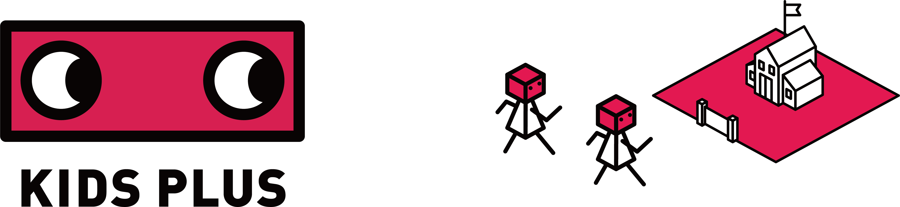

最新のアップデート情報やシステム障害情報はこちらからご確認ください。
KIDS PLUS アップデート情報
システム障害情報
kids+clock（iPadアプリ）をご利用の皆様へ
最新版へのアップデートをお願いします。
kids+clock アップデート方法
enスケジューラ
施設見学も面談も簡単Web予約
KIDS PLUS english
楽しく学ぶ。未来を創る。オンライン英会話。
Fast DOCTOR
会員特典で往診無料（対象施設のみ）
お知らせ
2025.09.16
法人お知らせ配信機能に「既読・未読」確認機能を追加しました。
「日々の作業」＞「お知らせ配信」＞「法人お知らせ配信」から確認できます。
2025.08.19
KIDS PLUS アプリ（保護者）の登録マニュアルを更新しました。最新のマニュアルをダウンロードしてご利用ください。
「全体管理」＞「システム管理」＞「保護者接続コード」から印刷できます。
2025.08.15
KIDS PLUS アプリ（保護者）の緊急連絡先優先順位設定機能をリリースしました。
詳しくは、資料室よりご確認ください。
2025.07.10
KIDS PLUS ご利用マニュアルを更新しました。
詳しくは、資料室よりご確認ください。